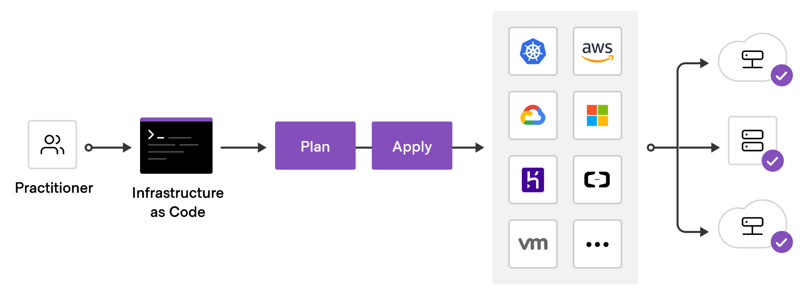
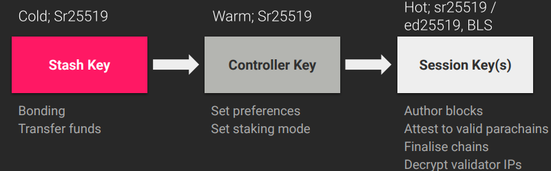
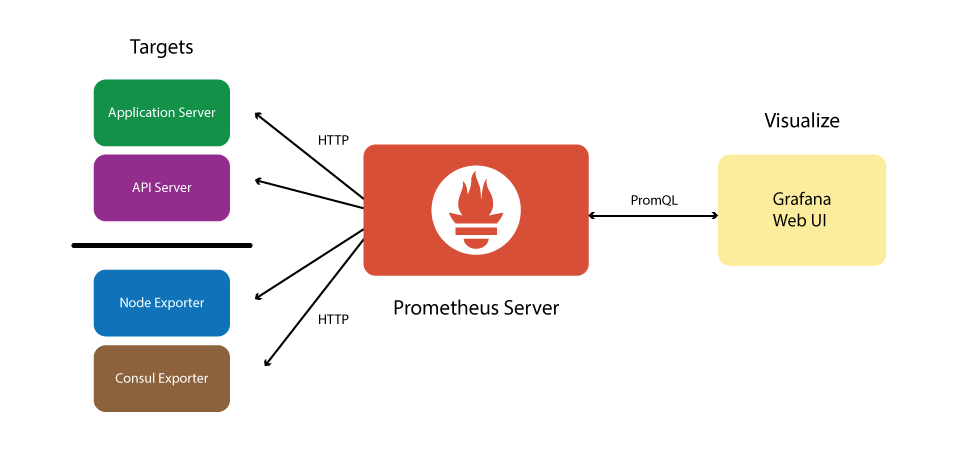
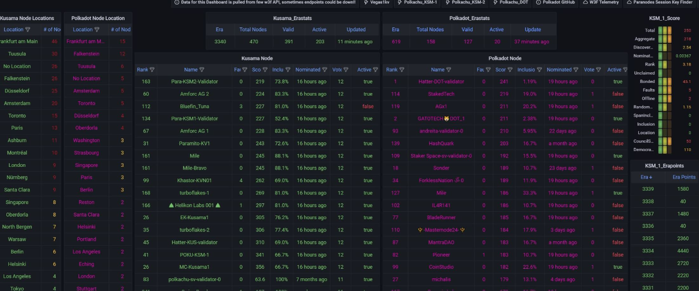

Overview
This document has been written for two main functions. First to provide a clear overview of the existing setup. The second is to provide some guidance on agreeing the CI strategy moving forward.
General Approach to Infrastructure
It is highly recommended that projects deploying networks have an infrastructure as code mindset. The infrastructure components in deployments should be written in code and put in a version control system.
This ensures that:
- Your Infrastructure is in a known state
- Version control is available to see changes and enforce reviews etc..
- Rolling back is made very easy
- There are no manual actions required to redeploy

General Approach to Security
One of the main desired properties of a blockchain is security, so having a very ‘secure by default’ approach to your infrastructure should always be in the forefront of your mind when deploying new networks.
On the infrastructure side, having strict rules and blocking any non-required communication is just a starting point. Other things that should be considered are things like log monitoring, bastion hosts being required for access, 2FA for ssh etc…
On the chain operations side, there are two very useful concepts to increase your security.
First is using cold / warm / hot keys, so that the compromise of say a session key would not lead to any funds being stolen. Also using multi-sig accounts on offline devices can greatly help security and also give an on-chain audit trail of all actions, allows for alerting for any onchain actions etc..

Proxy accounts also let you limit the permission that an account or multisig account has on a particular target account (e.g. only staking functions can be executed by the staking controller multisig account and require 3 of 5 people to approve).
Deployments
This section describes the various types of deployments and options used for each.
-
Role Types lists the type of role a node can be (e.g. validator, full node etc..)
-
Remote Targets describes the type of remote host you can deploy to (e.g. VM or Kubernetes)
-
Role Specific Arguments lists specific options to be used for each node type
Node Types
A non exhaustive list of some common node types:
| Type | Function |
|---|---|
| Validator | Secures the Relay Chain by staking DOT, validating proofs from collators on parachains and voting on consensus along with other validators. |
| Collator | Maintains a parachain by collecting parachain transactions and producing state transition proofs for the validators. |
| Bootnode | A node with a static address and p2p public key, used to bootstrap a node onto the network’s distributed hash table and find peers. |
| RPC Node | Expose an RPC interface over http or websocket for the relay chain or parachain and allow users to read the blockchain state and submit transactions (extrinsics). There are often multiple RPC nodes behind a load balancer. |
| Archive Node | A node which is syncing to the relay chain or parachain and has a complete database starting all the way from the genesis block. |
| Full Node | A node which is syncing the relay chain or parachain to the current best block. |
Deployment Targets
A non exhaustive list of some common deployment targets:
| Type | Description |
|---|---|
| Physical Server | Usually a rack mounted server sitting in a data center. |
| Virtual Machine | A virtual machine hosted by one of many cloud providers or self hosted onsite. |
| Kubernetes | A container orchestration engine to host your blockchain instances. This option is only recommended if you already have prior experience with kubernetes, especially in production environments. |
| Local Container | An instance running on a local container engine (e.g. containerd, docker, podman). |
Special Options Per Host Type
| Type | Function |
|---|---|
| Validator | Should at least be running with the --validator flag to enable block validation. Also keys should have been injected or the RPC author_rotateKeys called. |
| Collator | Should at least be running with the --collator flag to enable parachain collation. |
| Bootnode | A node with a static key file so the p2p public address is always the same. Store this private key in a file and use the option: --node-key-file /path/to/file |
| RPC Node | Use these options to allow 5000 public RPC/WS connections: --unsafe-ws-external --rpc-methods Safe --rpc-cors ‘*’ --ws-max-connections 5000 |
| Archive Node | Use -–pruning=archive to not prune any block history |
| Full Node | N/A |
Parachain Specifics
When running a parachain then you will need two sets of arguments, one for the relay chain and one for the parachain. Used in the format:
./statemine $PARACHAIN_OPTIONS -- $RELAYCHAIN_OPTIONS
A real life example of this while executing as a statemine collator would be:
./statemine --chain statemine --in-peers 25 --out-peers 25 --db-cache 512 --pruning=1000 --unsafe-pruning -- --chain kusama -db-cache 512 --pruning=1000 --wasm-execution Compiled
Server Deployments
-
Systemd describes options for running a node and various systemd specific options.
-
Logging shows some common local and remote logging configurations.
Systemd
Overview
Systemd is a common way to manage services on linux hosts. It can ensure the process is enabled and running, allows you to set a policy for restarts and also set the user running the host, limit the memory usage etc..
It can also use an environment variable file which can help abstract the variables into it's own file per server.
Simple Example
A simple example running a local dev chain as Alice, assuming the username is called polkadot would look like:
[Unit]
Description=Polkadot Validator
[Service]
User=polkadot
ExecStart=/home/polkadot/polkadot --dev --alice
Restart=always
RestartSec=90
[Install]
WantedBy=multi-user.target
This file should be placed in /etc/systemd/system/polkadot.service and then enabled with systemctl enable polkadot then systemctl start polkadot to start the service.
Using Environment Varible Files
If we want to remove some options from the systemd file itself (e.g. --dev --alice) and put them in an environment variable file then the systemd service would now look like:
[Unit]
Description=Polkadot Validator
[Service]
User=polkadot
EnvironmentFile=/etc/default/polkadot
ExecStart=/home/polkadot/polkadot $START_OPTIONS
Restart=always
RestartSec=90
[Install]
WantedBy=multi-user.target
Then you would need to create a file in /etc/default/polkadot which looks like:
START_OPTIONS="--dev --alice"
You can do this with multiple variables to abstract the configuration from the systemd file running on your hosts.
Logging
Local Logging
By default output from your systemd service will go to local syslog. This will mean it ends up in a place like /var/log/syslog or /var/log/messages
You can also view these using the journalctl command. To tail the current output of the polkadot process run:
journalctl -u polkadot -f
It is also possible to remove old logs (say older than two days ago) using a command:
journalctl -u polkadot --vacuum-time=2d
Or to retain only the past 1G of data run:
journalctl --vacuum-size=1G
Remote Logging
In a setup with many hosts you will want to aggregate the logs at a central point, some common options include Loki or Elasticsearch.
Loki
To log to a remote loki instance you need to install the promtail package. An example configuration file to send logs to a remote host:
# promtail server config
server:
http_listen_port: 9080
grpc_listen_port: 0
log_level: info
positions:
filename: /var/lib/promtail/positions.yaml
# loki servers
clients:
- url: http://myloki.mycompany.com/loki/api/v1/push
backoff_config:
min_period: 1m
max_period: 1h
max_retries: 10000
scrape_configs:
- job_name: journald
journal:
max_age: 1m
path: /var/log/journal
labels:
job: journald
pipeline_stages:
- match:
selector: '{job="journald"}'
stages:
- multiline:
firstline: '^\d{4}-\d{2}-\d{2} \d{2}:\d{2}:\d{2}\.\d{3}'
max_lines: 2500
- regex:
expression: '(?P<date>\d{4}-\d{2}-\d{2} \d{2}:\d{2}:\d{2}\.\d{3})\s+(?P<level>(TRACE|DEBUG|INFO|WARN|ERROR))\s+(?P<worker>([^\s]+))\s+(?P<target>[\w-]+):?:?(?P<subtarget>[\w-]+)?:[\s]?(?P<chaintype>\[[\w-]+\]+)?[\s]?(?P<message>.+)'
- labels:
level:
target:
subtarget:
Elasticsearch
To log to a remote elasticsearch cluster you need to install the logstash package. An example configuration would look like:
nput {
journald {
path => "/var/log/journal"
seekto => "tail"
thisboot => true
filter => {
"_SYSTEMD_UNIT" => "polkadot.service"
}
type => "systemd"
}
}
filter {
date {
match => ["timestamp", "YYYY-mm-dd HH:MM:ss.SSS"]
target => "@timestamp"
}
mutate {
rename => [ "MESSAGE", "message" ]
remove_field => [ "cursor", "PRIORITY", "SYSLOG_FACILITY", "SYSLOG_IDENTIFIER", "_BOOT_ID", "_CAP_EFFECTIVE", "_CMDLINE", "_COMM", "_EXE", "_GID", "_HOSTNAME", "_MACHINE_ID", "_PID", "_SELINUX_CONTEXT", "_STREAM_ID", "_SYSTEMD_CGROUP", "_SYSTEMD_INVOCATION_ID", "_SYSTEMD_SLICE", "_SYSTEMD_UNIT", "_TRANSPORT", "_UID" ]
}
if ([message] =~ ".*TRACE .*") { drop{ } }
grok {
match => { "message" => "%{NOTSPACE:thread} %{LOGLEVEL:log-level} %{NOTSPACE:namespace} %{GREEDYDATA:message}" }
}
}
output {
elasticsearch {
hosts => ["https://myelasticsearch.mycompany.com:9243"]
user => "username"
password => "password"
index => "logstash-polkadot-%{+YYYY.MM.dd}"
}
}
Logging Options
Logging output from any substrate based changes has many log levels and targets. All targets are set to info logging by default. You can adjust individual log levels using the --log (-l short) option, for example -l afg=trace,sync=debug or globally with -ldebug.
Levels:
- error
- warn
- info
- debug
- trace
Targets:
- afg
- aura
- babe
- beefy
- db
- gossip
- header
- peerset
- pow
- rpc
- runtime
- runtime::contracts
- sc_offchain
- slots
- state-db
- state_tracing
- sub-libp2p
- sync
- telemetry
- tracing
- trie
- txpool
Automation
Cloud Provisioning
There are multiple options to provision cloud resources, which can either be provider specific and some tools are more cloud agnostic.
Popular Cloud Provider Specific Deployment Tooling:
These vendor specific deployment tools are easy to use, have great examples and support. However when using multiple providers with custom scripting formats, making a basic to your infrastructure can require changes to multiple sections of code, for each provider to do the same thing (e.g. open a port on a host).
A more general solution where a change can be specified once and be used with multiple providers is using Terraform. Which currently has more than 2000 providers supported.
Terraform
Terraform is a very commonly used tool for creating all sorts of cloud resources. It supports many different providers along with having excellent modules for the main three providers (AWS, Azure, GCP). Many projects rely on this for their infrastructure deployments.
It uses HashiCorp’s HashiCorp Configuration Language, which makes it very easy to abstract configuration, avoid the reuse of code and enables you to plug modules together easily (e.g. RPC nodes along with a frontend load balancer).
The code is also easy to read and should be in version control. Multiple environments can be defined so you can ensure you are using the same code on dev / test / production.
Two ways to preconfigure your host after deployment using terraform directly is to either:
- Use a pre-packaged image with all of your software (e.g. packer or similar tooling)
- Use a cloud-init script to execute a certain script to preconfigure your base image
Some examples of using terraform with multiple providers can be found in the W3F’s polkadot-validator-setup github repo.
Click here for a list of terraform providers.
Host Maintenance
Once your hosts are deployed you will need to configure the hosts and install the required software, configuration files etc…As mentioned this can be done in a few ways using terraform itself, however another very flexible way of configuring hosts is using ansible.
| Component | Description |
|---|---|
| Playbook | Playbooks are the language by which Ansible orchestrates, configures, administers, or deploys systems |
| Role | Roles are units of organization in Ansible. Assigning a role to a group of hosts (or a set of groups, or host patterns, and so on) implies that they should implement a specific behavior |
When deploying our blockchain nodes, we will need an inventory which contains a list of our hosts and the groups they are in (e.g. validator, collator, rpc) and maybe some secrets which can be encrypted inline within the inventory using ansible vault. We will then call a playbook which links hosts/groups in the inventory with roles to execute on each host.
Some examples of using ansible can be found in the paritytech's ansible-galaxy github repo. Specifically the node role.
Kubernetes
As previously mentioned, kubernetes deployments are only recommended for people with good prior operating experience of kubernetes.
The management of substrate/polkadot based nodes in kubernetes is made very easy with:
-
Parity Helm Chart a helm chart to deploy all types of nodes to kubernetes
-
Testnet Manager a powerful tool for deploying and maintaining test networks in kubernetes.
Helm Chart
Overview
Parity maintain a helm github repo @ https://github.com/paritytech/helm-charts - Inside this repo is the node chart which should be used for deploying your substate/polkadot binary.
All variables are documented clearly in the README.md and there’s an example values.yml which you can start working from.
Example Rococo Local Chain
This is a simple example of deploying a rococo-local test chain in kubernetes. Two validators and two full nodes will be deployed via the helm chart. Once both validators are running you will see block production. A custom node key is used on the Alice validator which all other hosts use as a bootnode.
First install the helm repo:
helm repo add parity https://paritytech.github.io/helm-charts/
helm install polkadot-node parity/node
Deploy Validator Alice:
Alice will be deployed in a statefulset and use an example custom node key, along with deploying a service to be used as a bootnode:
helm install rococo-alice parity/node --set node.role="validator" --set node.customNodeKey="91cb59d86820419075b08e3043cd802ba3506388d8b161d2d4acd203af5194c1" --set node.chain=rococo-local --set node.perNodeServices.relayP2pService.enabled=true --set node.perNodeServices.relayP2pService.port=30333 --set node.flags="--alice --rpc-external --ws-external --rpc-cors all --rpc-methods=unsafe"
Deploy Validator Bob:
helm install rococo-bob parity/node --set node.role="validator" --set node.chain=rococo-local --set node.flags="--bob --bootnodes '/dns4/rococo-alice-node-0-relay-chain-p2p/tcp/30333/p2p/12D3KooWMeR4iQLRBNq87ViDf9W7f6cc9ydAPJgmq48rAH116WoC'"
Deploy Two Full Nodes:
helm install rococo-pool parity/node --set node.chain=rococo-local --set node.replicas=2 --set node.flags="--bootnodes '/dns4/rococo-alice-node-0-relay-chain-p2p/tcp/30333/p2p/12D3KooWMeR4iQLRBNq87ViDf9W7f6cc9ydAPJgmq48rAH116WoC'"
Once these steps are complete you will have a working rococo-local test chain with two validators and two full nodes.
GitOps Tooling
Below are some useful GitOps tool for managing helm releases. Here is a list of tool from simplest to more advanced:
Important Chart Options:
| Option | Description |
|---|---|
| node.chain | Network to connect to |
| node.command | Binary to use |
| node.flags | Flags to use with binary in container |
| node.customChainspecUrl | Custon Chainspec URL |
Testnet Manager
The Testnet manager (helm chart) lets you dynamically control test networks via a simple UI or API. It gives you a single pane of glass to list, inspect and interact with the nodes (full nodes, validators and parachain collators) running in a given Kubernetes namespace.
Rococo Example View
List Parachains

List Parachain Collators

Inspect Validator Node

Usage
Requirements
The testnet manager requires the chain Sudo seed phrase to perform management functions. Also some chain specific variables should be defined in a configmap, this can be added to the values.yaml:
configmap:
WS_ENDPOINT: "ws://rococo-alice-node-0.rococo:9944"
NODE_HTTP_PATTERN: "http://NODE_NAME.rococo:9933"
NODE_WS_PATTERN: "ws://NODE_NAME.rococo:9944"
HEALTHY_MIN_PEER_COUNT: "1"
LOG_LEVEL: DEBUG
secret:
SUDO_SEED: "0xe5be9a5092b81bca64be81d212e7f2f9eba183bb7a90954f7b76361f6edb5c0a" # Alice
VALIDATORS_ROOT_SEED: "test test test test test test test test test test test test"
Then install the testnet manager and port forward a connection using the output of the install:
helm repo add parity https://paritytech.github.io/helm-charts/
helm repo update
helm install testnet-mgr parity/testnet-manager --values values.yaml
Frontend GUI
In the nodes section you can view all running nodes, their roles, chain, uptime, cli arguments and you can also view logs.

Interact with API via Frontend
It's possible to view the API calls and execute them via the GUI. The main functions are:
- Viewing nodes, validators, collators and parachains
- Registering / de-registering validators and collators
- Onboarding / off-boarding parachains
- Rotating session keys

Examples
Register a new validator in the StatefulSet called rococo-val-pool:
curl -X 'POST' \
'http://localhost:8080/api/register_validators?statefulset=rococo-val-pool' \
-H 'accept: application/json' \
-d ''
Onboard Parachain id 1000:
curl -X 'POST' \
'http://localhost:8080/api/onboard_parachain/1000' \
-H 'accept: application/json' \
-d ''
How does it work ?
The testnet-manager is deployed in the same Kubernetes namespaces as nodes deployed with the node helm-chart. As node pods deployed with the chart are tagged with the appropriate labels (eg. chain name, para ID), the manager is able to query the Kubernetes API and list the running nodes for each network (relay-chain, parachains).
By combining this list of nodes with the on-chain state retrieved from RPC endpoints (eg. list of active validators accounts), the manager can automate node key setup (by interacting directly with each node RPC endpoint) and registration (by submitting sudo extrinsics). Behind the scenes, it uses a derivation formula for generating deterministic Validator/Collator accounts addresses: "${VALIDATORS_ROOT_SEED}//${node-name}".
Monitoring Overview
We can generally split monitoring into two different areas: • On-chain monitoring - monitoring events on-chain, e.g. a transaction by a certain address, a validator set change etc… • On-host monitoring - this is monitoring the individual node, e.g. the current block height, amount of p2p connections, amount of free memory on the host itself.
On-Chain
This type of monitoring will generally check onchain via RPC nodes to check the values / delays / timing of events. You would normally only need two of these instances for all hosts. It is a good idea to run your own RPC servers to service these in case there are issues with the public RPC nodes. Some example applications that queries onchain information are polkabot and polkadot-basic-notification.
On-Host
You should monitor each node that you run on the network. Polkadot/Substrate exposes a bunch of useful metrics on http://host:9615/metrics, with http://host:9615/ being a healthcheck. This endpoint will only be exposed on the local network interface by default but you can expose it on all interfaces with the --prometheus-external flag.
This outputs in a simple key - value format. However you can also include tags within the key.
Simple Value:
polkadot_database_cache_bytes 0
Values with tags:
susbtrate_block_height{status="best"} 136
susbtrate_block_height{status="finalized"} 133
As the metrics provided by this endpoints don't include hosts metrics (e.g. cpu, memory, bandwidth usage), it is recommended to complement it with the prometheus node exporter which needs to be installed on the same host.
Telemetry
The telemetry server is used for real time information from nodes, showing information about their name, location, current best & finalized blocks etc… This gives you a useful dashboard to view the state of nodes.
The project is in the substrate-telemetry github repo, a helm chart is also available to allow easy kubernetes deployments.
Example Monitoring Stack

An example of a very common open source monitoring stack. There are various tools for each layer of the stack:
- Prometheus - A time series database which can hold large amounts of data that can be accessed very quickly. It scrapes data from your defined exporters and saves this data.
- Grafana - Grafana allows you to query, visualize, and understand your metrics. Many example dashboards exist and it is easy to create new ones.
- Alertmanager - Creates and routes alerts based on alert rules and metrics. Many provider plugins exist to send alerts via email / sms / telegram / pagerduty / victorops / slack / matrix etc...
- Loki - A highly scalable log aggregation system that allows you to view and search logs from all your infrastruture in one place.
- Exporter - A process that listens on a port and reports appliation specific metrics to prometheus when scraped. Lots of exporters exist and new ones are easy to write. It just requires you return data in the format of: `
: ' with labels being optional.
Prometheus
“Prometheus, a Cloud Native Computing Foundation project, is a systems and service monitoring system. It collects metrics from configured targets at given intervals, evaluates rule expressions, displays the results, and can trigger alerts when specified conditions are observed.” - Prometheus Github Repository
Prometheus is the engine which drives our monitoring system. For our example we will mainly focus on two sections:
Targets
Targets are a list of endpoints you want to scrape. The two main exporters we care about are for 1) polkadot/substrate and 2) the node-exporter. An example of scraping these on the IP address 1.1.1.1 would be:
scrape_configs:
- job_name: check blockchain node
static_configs:
- targets:
- 1.1.1.1:9080 # promtail
- 1.1.1.1:9100 # node exporter
- 1.1.1.1:9615 # substrate node
Rules
Now that you are gathering data from the host you can add rules that will trigger alerts. These are defined in the format:
- alert: BlockProductionSlow
annotations:
message: 'Best block on instance {{ $labels.instance }} increases by
less than 1 per minute for more than 3 minutes.'
expr: increase(polkadot_block_height{status="best"}[1m]) < 1
for: 3m
labels:
severity: warning
Here’s an example with some basic block production rules.
Grafana
Grafana is where you can define dashboards to show the time series information that prometheus is collecting. You just need to ensure you add a datasource:
datasources:
- name: "prometheus-prod"
type: prometheus
access: proxy
editable: false
orgId: 1
url: "http://prometheus-prod.monitoring.svc.cluster.local"
version: 1
jsonData:
timeInterval: 30s
You can find existing polkadot dashboards at grafana.com -

Alertmanager
The final part of the monitoring stack will be how and where to alert if something does go wrong. For example you may want to send instant messages for warning alerts, but page somebody 24/7 for critical alerts.
Alertmanager has many modules for email / many IM formats with almost any output being supported. You can also use 3rd party providers like pagerduty or victorops and do very detailed management of oncall queues, schedules etc…
A simple alert for block production being slow would look like:
- alert: BlockProductionSlow
annotations:
message: 'Best block on instance {{ $labels.instance }} increases by
less than 1 per minute for more than 3 minutes.'
expr: increase(substrate_block_height{status="best"}[1m]) < 1
for: 3m
labels:
severity: warning
This will then be sent to the outbound path for the severity warning.
Loki
“Loki is a horizontally scalable, highly available, multi-tenant log aggregation system inspired by Prometheus”
Loki is used to aggregate logs from blockchain nodes, allowing the operator to see errors, patterns and be able to search through the logs from all hosts very easily. An agent called promtail is used to push logs to the central loki server.
Example promtail.yaml configuration to collect the logs of a node managed by systemd:
# promtail server config
server:
http_listen_port: 9080
grpc_listen_port: 0
log_level: info
positions:
filename: /var/lib/promtail/positions.yaml
# loki servers
clients:
- url: http://loki.example.com/loki/api/v1/push
backoff_config:
min_period: 1m
max_period: 1h
max_retries: 10000
scrape_configs:
- job_name: journald
journal:
max_age: 1m
path: /var/log/journal
labels:
job: journald
pipeline_stages:
- match:
selector: '{job="journald"}'
stages:
- multiline:
firstline: '^\d{4}-\d{2}-\d{2} \d{2}:\d{2}:\d{2}\.\d{3}'
max_lines: 2500
- regex:
expression: '(?P<date>\d{4}-\d{2}-\d{2} \d{2}:\d{2}:\d{2}\.\d{3})\s+(?P<level>(TRACE|DEBUG|INFO|WARN|ERROR))\s+(?P<worker>([^\s]+))\s+(?P<target>[\w-]+):?:?(?P<subtarget>[\w-]+)?:[\s]?(?P<chaintype>\[[\w-]+\]+)?[\s]?(?P<message>.+)'
- labels:
level:
target:
subtarget:
- metrics:
log_lines_total:
type: Counter
Description: "Total Number of Chain Logs"
prefix: "promtail_chain_"
max_idle_duration: 24h
config:
match_all: true
action: inc
- match:
selector: '{job="journald", level="ERROR"}'
stages:
- multiline:
firstline: '^\d{4}-\d{2}-\d{2} \d{2}:\d{2}:\d{2}\.\d{3}'
max_lines: 2500
- metrics:
log_lines_total:
type: Counter
Description: "Total Number of Chain Error Logs"
prefix: "promtail_chain_error_"
max_idle_duration: 24h
config:
match_all: true
action: inc
- match:
selector: '{job="journald", level=~".+"} |~ "(?i)(panic)"'
stages:
- multiline:
firstline: '^\d{4}-\d{2}-\d{2} \d{2}:\d{2}:\d{2}\.\d{3}'
max_lines: 2500
- metrics:
log_lines_total:
type: Counter
Description: "Total Number of Chain Panic Logs"
prefix: "promtail_chain_panic_"
max_idle_duration: 24h
config:
match_all: true
action: inc
relabel_configs:
- source_labels: ['__journal__systemd_unit']
target_label: 'unit'
- source_labels: ['unit']
regex: '(.*.scope|user.*.service)'
action: drop
- source_labels: ['__journal__hostname']
target_label: 'host'
- action: replace
source_labels:
- __journal__cmdline
- __journal__hostname
separator: ";"
regex: '.*--chain.*;(.*)'
target_label: 'node'
replacement: $1
The above example also configures the following custom metrics derived from logs promtail_chain_log_lines_total, promtail_chain_error_log_lines_total and promtail_chain_panic_log_lines_total to be exposed on the promtail metrics endpoint (http://host:9080).
Keys And Accounts
This page will describe some basic information on keys and accounts. For a more general and detailed explination see learn accounts on the polkadot wiki page.
Encryption Schemes
| Name | Type |
|---|---|
| ed25519 | The vanilla ed25519 implementation using Schnorr signatures. |
| sr25519 | The Schnorrkel/Ristretto sr25519 variant using Schnorr signatures. (default) |
| ecdsa | ECDSA signatures on secp256k1 |
Session Key Types
| Name | Type |
|---|---|
| grandpa | ed25519 |
| babe | sr25519 |
| im_online | sr25519 |
| para_validator | sr25519 |
| para_assignment | sr25519 |
| authority_discovery | sr25519 |
| beefy | ecdsa |
Key Generation and Inspection
You can use polkadot keys or the subkey command to generate and inspect keys.
Two important subcommands are:
generateCreate a new random account and print the private key data or save to a file.inspectView the account data for an account by passing a secret phrase or seed.
Some important options are:
--networkspecify the network the keys will be used on, default is substrate.--schemethe scheme for the keys, default is sr25519.
Generate
Create Polkadot Random Key:
$ polkadot key generate -n polkadot
Secret phrase: settle whisper usual blast device source region pumpkin ugly beyond promote cluster
Network ID: polkadot
Secret seed: 0x2e6371e04b45f16cd5c2d66fc47c8ad7f2881215287c374abfa0e07fd003cb01
Public key (hex): 0x9e65e97bd8ba80095440a68d1be71adff107c73627c8b85d29669721e02e2b24
Account ID: 0x9e65e97bd8ba80095440a68d1be71adff107c73627c8b85d29669721e02e2b24
Public key (SS58): 14agqii5GAiM5z4yzGhJdyWQ3a6HeY2oXvLdCrdhFXRnQ77D
SS58 Address: 14agqii5GAiM5z4yzGhJdyWQ3a6HeY2oXvLdCrdhFXRnQ77D
Inspection
Inspect Created Key:
$ ./polkadot key inspect -n polkadot "settle whisper usual blast device source region pumpkin ugly beyond promote cluster"
Secret phrase: settle whisper usual blast device source region pumpkin ugly beyond promote cluster
Network ID: polkadot
Secret seed: 0x2e6371e04b45f16cd5c2d66fc47c8ad7f2881215287c374abfa0e07fd003cb01
Public key (hex): 0x9e65e97bd8ba80095440a68d1be71adff107c73627c8b85d29669721e02e2b24
Account ID: 0x9e65e97bd8ba80095440a68d1be71adff107c73627c8b85d29669721e02e2b24
Public key (SS58): 14agqii5GAiM5z4yzGhJdyWQ3a6HeY2oXvLdCrdhFXRnQ77D
SS58 Address: 14agqii5GAiM5z4yzGhJdyWQ3a6HeY2oXvLdCrdhFXRnQ77D
Inspect Created Key With Hard Derivation //Stash//0:
$ polkadot key inspect -n polkadot "settle whisper usual blast device source region pumpkin ugly beyond promote cluster//Stash//0"
Secret Key URI `settle whisper usual blast device source region pumpkin ugly beyond promote cluster//Stash//0` is account:
Network ID: polkadot
Secret seed: 0xe9437b365161e8228e8abd53d64e6b31058dcddcd0b96f895045ecc41579ee3e
Public key (hex): 0xd8ed7b942f6e590b06e99951ac10e3312f65f01df5b3f250b70374fc2da1046d
Account ID: 0xd8ed7b942f6e590b06e99951ac10e3312f65f01df5b3f250b70374fc2da1046d
Public key (SS58): 15uRtdeE4MyMHV9LP1UHKqTx4f8Qa8uVZUpxWWw8VKSroucK
SS58 Address: 15uRtdeE4MyMHV9LP1UHKqTx4f8Qa8uVZUpxWWw8VKSroucK
Custom Chain
This section will explain what is required to build a custom chain spec for your own dev network.
Create Chain Spec
Create a non-raw chainspec for your network with:
./binary build-spec –chain chain-name --disable-default-bootnode > custom-chainspec.json
Important Fields:
| Field | Purpose |
|---|---|
| Name | Name of the network |
| id | Id of network, also used for the filesystem path |
| bootNodes | List of multiaddr’s of bootnodes for the network |
| telemetryEndpoints | List of telemetry endpoints to contact by default |
| staking.stakers | List of initial validators |
| session.keys | List of initial session keys for validators |
Once the values have been updated this chainspec should be converted in raw format using the command:
polkadot build-spec –chain custom-chainspec.json –raw > custom-chainspec-raw.json
Inject initial validator keys
There are two main ways to inject the initial validator keys:
CLI
Example to insert one ed25519 and one sr25519 key.
polkadot key insert -d <my_chain_folder> --key-type gran --scheme ed25519 --suri <my_key_suri>
polkadot key insert -d <my_chain_folder> --key-type babe --scheme sr25519 --suri <my_key_suri>
RPC
Example to inject key via RPC, edit the KEY_TYPE sand KEY_SEED:
curl -H "Content-Type: application/json" \ --data '{ "jsonrpc":"2.0", "method":"author_insertKey", "params":["'"${KEY_TYPE}"'", "'"${KEY_SEED}"'"],"id":1 }' http://localhost:9933
Infrastructure Tooling
This section is for listing some useful projects and tools that are releavant for node operators and developers. A community maintained Awesome Substrate is a more detailed general list.
Testing
| Project | Description |
|---|---|
| Zombienet | A great tool for deploying test setups. Providers include native, podman and kubernetes. Also supports running automated tests against these networks |
| smart bench | Smart contracts benchmarking on Substrate |
Frontends
| Project | Description |
|---|---|
| polkadot-js frontend | Github repo for [https://polkadot.js.org/apps/] - commonly used application for interacting with substrate and polkadot based chains |
| Staking Dashbord | A sleek staking dashboard using react and the polkadot-js library |
| contracts-ui | Web application for deploying wasm smart contracts on Substrate chains that include the FRAME contracts pallet |
| Example polkadot-js-bundle | Use polkadot javascript bundles to write custom frontends |
Indexing Chain Data
| Project | Description |
|---|---|
| substrate archive | Blockchain indexing engine using PostgreSql |
| Subsquid | Blockchain indexing engine using GraphQL |
CLI Utilities
| Project | Description |
|---|---|
| Subkey | Used for generating and restoring keys. Works with multiple networks and key schemes |
| polkadot-js-tools | A very flexible utility for executing API calls or running queries. |
| Subxt | Submits extrinsics via RPC |
Polkadot Js Tools
Polkadot Js Tools is an amazing tool for interacting with substrate based chains.
A full list of possible rpc calls and extrinsics are available from the polkadot js docs page.
Functions
-
api-cli A cli tool to allow you to make API calls to any running node
-
json-serve A server that serves JSON outputs for specific queries
-
monitor-rpc A simple monitoring interface that checks the health of a remote node via RPC
-
signer-cli A cli tool that allows you to generate transactions in one terminal and sign them in another terminal (or computer)
-
vanitygen Generate vanity addresses, matching some pattern
Install
Steps:
-
Clone repo:
git clone https://github.com/polkadot-js/tools.git -
Install dependencies and build:
yarn install && yarn build
Example Chain Queries
Display block information (parent hash, block number, state root etc..) for last block:
yarn run:api query.chain.getHeader
Get the balance for the account //Alice:
yarn run:api query.system.account 15oF4uVJwmo4TdGW7VfQxNLavjCXviqxT9S1MgbjMNHr6Sp5
Display all RPC methods available:
yarn run:api rpc.rpc.methods
Example Chain Transactions/Extrinsics
Simple transfer of 1 unit //Alice to //Bob on the same chain. Using --seed as the sender for signing the transactions:
yarn run:api tx.balances.transfer 5FHneW46xGXgs5mUiveU4sbTyGBzmstUspZC92UhjJM694ty 10000000000 --seed "//Alice"
Transfer 1.23 units from //Alice on the relay chain to //Charlie on the parachain 1000:
yarn run:api tx.xcmPallet.limitedTeleportAssets '{"v1":{"parents":0,"interior":{"x1":{"parachain":1000}}}}' '{"v1":{"parents":0,"interior":{"x1":{"AccountId32": {"id": "0x90b5ab205c6974c9ea841be688864633dc9ca8a357843eeacf2314649965fe22", "network": "Any"}}}}}' '{"v1": [ {"id": { "Concrete": {"parents":0, "interior":"Here" }}, "Fun": { "Fungible": "12300000000"}}]}' 0 Unlimited --seed "//Alice"
Helmfile
Below are two examples of helmfile in action. One a simple single helmfile for testing and the second a more realistic example to be used in production.
Basic helmfile example
This is a very simple one file example of a helmfile to deploy two rococo-local relaychain validators along with two parachains statemint-dev and contracts-rococo-dev. It is intended for basic testing and familiarisation of helmfile.
A more more real world example is listed below which comes from the testnet-manager repo. An nginx contrainer will also be deployed to host chain spec files.
Steps:
-
Create a helmfile based on the simple example below and name it helmfile.yaml
-
Install a webserver to host helmfiles using
kubectl create -f https://raw.githubusercontent.com/paritytech/testnet-manager/main/local-kubernetes/kube-setup/validators-chainspec.yml -
Add relaychain and parachains using:
helmfile sync
Real world helmfile example
You can find a good reference helmfile example at the testnet-manager examples folder.
Basic_helmfile
repositories:
- name: parity
url: https://paritytech.github.io/helm-charts/
helmDefaults:
createNamespace: false
waitForJobs: true
releases:
## relay chain Rococo ##
- name: validator-alice
namespace: rococo
chart: parity/node
version: 2.11.4
values:
- node:
chain: rococo-local
replicas: 1
customChainspecUrl: "http://chainspec.rococo/rococo-local.json"
role: authority
flags:
- "--alice"
- "--unsafe-rpc-external"
- "--unsafe-ws-external"
- "--rpc-methods=unsafe"
- "--rpc-cors=all"
- "--node-key 0x91cb59d86820419075b08e3043cd802ba3506388d8b161d2d4acd203af5194c1"
storageClass: standard
extraLabels:
validatorAccount: "5GNJqTPyNqANBkUVMN1LPPrxXnFouWXoe2wNSmmEoLctxiZY" # Alice address
ss58Format: "0"
- name: validator-bob
namespace: rococo
chart: parity/node
version: 2.11.4
values:
- node:
chain: rococo-local
customChainspecUrl: "http://chainspec.rococo/rococo-local.json"
role: authority
replicas: 1
flags:
- "--bob"
- "--unsafe-rpc-external"
- "--unsafe-ws-external"
- "--rpc-methods=unsafe"
- "--rpc-cors=all"
storageClass: standard
extraLabels:
validatorAccount: "5HpG9w8EBLe5XCrbczpwq5TSXvedjrBGCwqxK1iQ7qUsSWFc" # Bob address
ss58Format: "0"
## Para chain Statemint ##
- name: statemint-alice
namespace: rococo
chart: parity/node
version: 2.11.4
values:
- image:
repository: "parity/polkadot-parachain"
tag: "latest"
- node:
chain: statemint-dev
role: collator
command: "/usr/local/bin/polkadot-parachain"
collator:
isParachain: true
relayChainFlags: "--execution wasm --bootnodes /dns4/validator-alice-node-0/tcp/30333/p2p/12D3KooWMeR4iQLRBNq87ViDf9W7f6cc9ydAPJgmq48rAH116WoC"
relayChainCustomChainspecUrl: "http://chainspec.rococo/rococo-local.json"
flags:
- "--alice"
- "--unsafe-rpc-external"
- "--unsafe-ws-external"
- "--rpc-methods=unsafe"
- "--rpc-cors=all"
- "--force-authoring"
- "--pruning=archive"
storageClass: standard
extraLabels:
paraId: "1000"
ss58Format: "0"
## Para chain contracts rococo
- name: contracts-alice
namespace: rococo
chart: parity/node
version: 2.11.4
values:
- image:
repository: "parity/polkadot-parachain"
tag: "latest"
- node:
chain: contracts-rococo-dev
role: collator
command: "/usr/local/bin/polkadot-parachain"
collator:
isParachain: true
relayChainFlags: "--execution wasm --bootnodes /dns4/validator-alice-node-0/tcp/30333/p2p/12D3KooWMeR4iQLRBNq87ViDf9W7f6cc9ydAPJgmq48rAH116WoC"
relayChainCustomChainspecUrl: "http://chainspec.rococo/rococo-local.json"
flags:
- "--alice"
- "--unsafe-rpc-external"
- "--unsafe-ws-external"
- "--rpc-methods=unsafe"
- "--rpc-cors=all"
- "--force-authoring"
- "--pruning=archive"
storageClass: standard
extraLabels:
paraId: "1002"
ss58Format: "0"
Zombienet
Below is an example that is similar to the helmfile example. It will deploy two rococo-local relaychain validators and two parachains statemint-dev and contracts-rococo-dev and also HRMP channels between parachains 1000 and 1002.
More Information
For more information see the Zombienet manual. For more examples see the Zomebienet examples in the Zombienet repo.
Steps
-
Clone the zombienet repo:
git@github.com:paritytech/zombienet.git -
Build zomebienet using:
npm install && npm run build -
Create a new config file based on the zombienet_example config
-
Deploy this to k8s using the command:
node cli/dist.js spawn path/configfile.yaml
Zombienet_example
relaychain]
default_image = "docker.io/paritypr/polkadot-debug:master"
default_command = "polkadot"
default_args = [ "-lparachain=debug" ]
chain = "rococo-local"
[[relaychain.nodes]]
name = "alice"
validator = true
[[relaychain.nodes]]
name = "bob"
validator = true
[[parachains]]
id = 1000
cumulus_based = true
chain = "statemint-dev"
[parachains.collator]
name = "statemint-collator"
image = "docker.io/parity/polkadot-parachain:latest"
command = "polkadot-parachain"
args = ["-lparachain=debug"]
[[parachains]]
id = 1002
cumulus_based = true
chain = "contracts-rococo-dev"
[parachains.collator]
name = "contracts-collator"
image = "docker.io/parity/polkadot-parachain:latest"
command = "polkadot-parachain"
args = ["-lparachain=debug"]
[[hrmpChannels]]
sender = 1000
recipient = 1002
maxCapacity = 4
maxMessageSize = 512
[[hrmpChannels]]
sender = 1002
recipient = 1000
maxCapacity = 4
maxMessageSize = 512